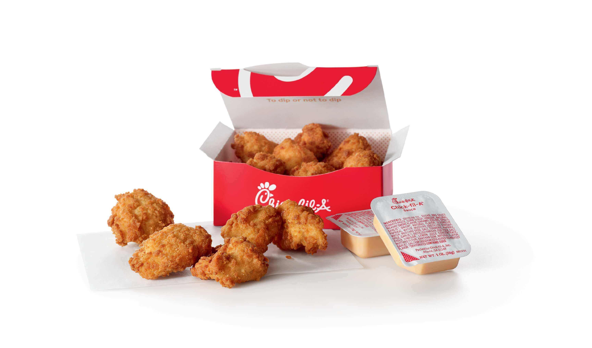
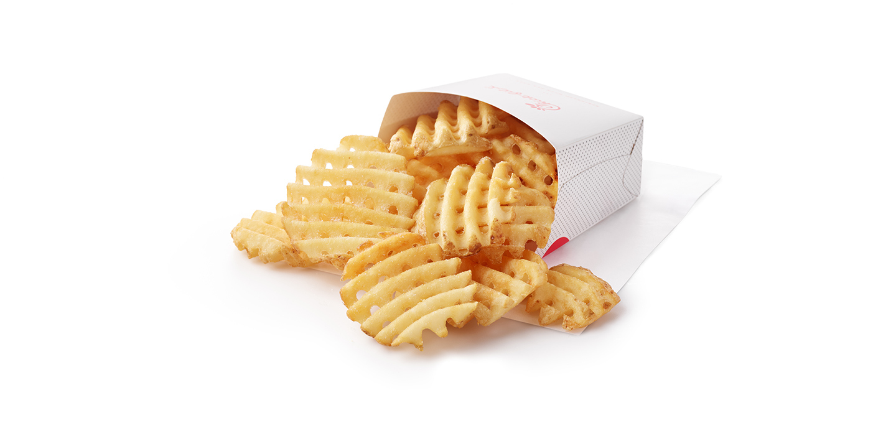
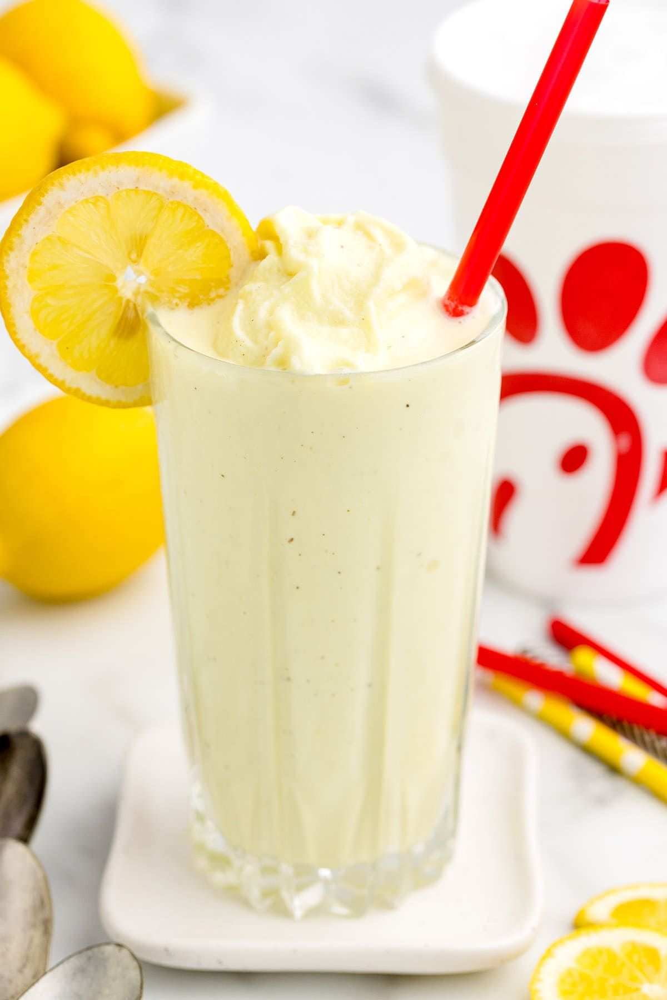

Chick-fil-A 🍗
Fast, warm comfort food that never disappoints. Perfect for quick lunches.
Chicken Nuggets

Crispy and golden bite-sized goodness.
Waffle Fries

Salty, crunchy, and iconic.
Frosted Lemonade

Sweet, cold, and super refreshing.